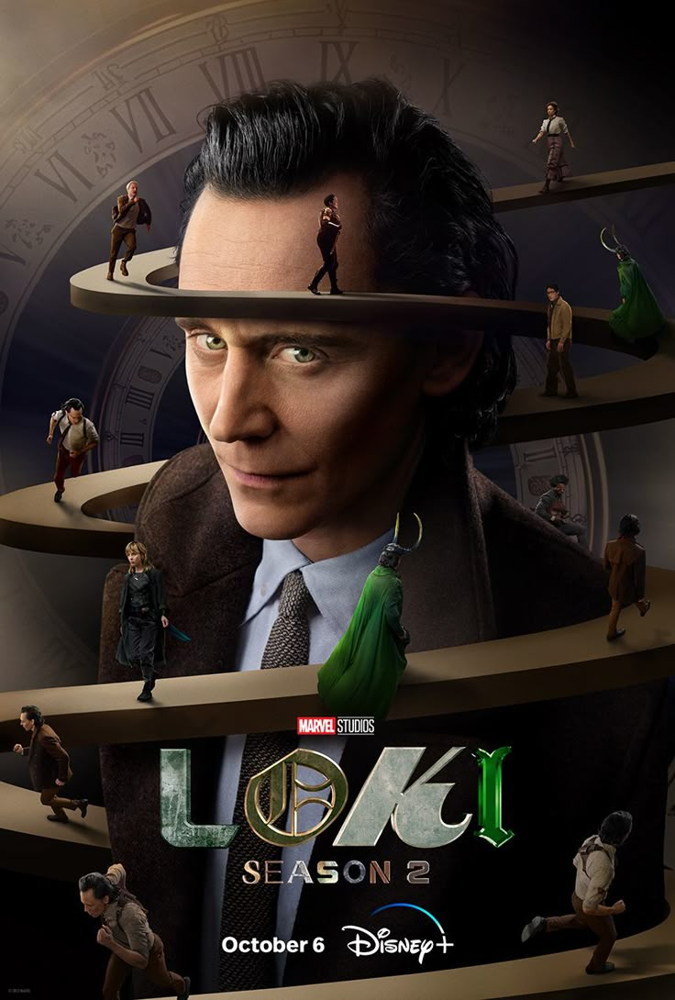

Loki - The Trickster God
About Loki Laufeyson:
Loki is a popular character from Marvel movies and TV shows.
He is known as the "God of Mischief"as he loves playing tricks and making trouble.
ABOUT:
Family:
Mother:Frigga
Father:Odin
Sibling:Thor
Place:Asgard
Real Name: Loki Laufeyson
Played By: Tom Hiddleston
First Movie: Thor (2011)
First Comic:Venus#6 (1949)
Loki Appearance
Here are the main movies and shows where Loki appears:
- Thor (2011) - Loki discovers he was adopted and becomes a villain
- The Avengers (2012) - Loki tries to take over Earth with an alien army
- Thor: The Dark World (2013) - Loki helps Thor save the world
- Thor: Ragnarok (2017) - Loki becomes more of a hero
- Avengers: Infinity War (2018) - Loki tries to save Thor
- Loki TV Series (2021-2023) - Loki goes on time-traveling adventures
Signature Quote:
"I am Loki, of Asgard, and I am burdened with glorious purpose."
Loki's Powers
- Magic: Loki can do powerful magic spells
- Illusions: He can create fake copies of himself
- Shapeshifting: Loki can change how he looks
- Smart: He is very intelligent and makes clever plans
- Strong: Loki is stronger than normal humans